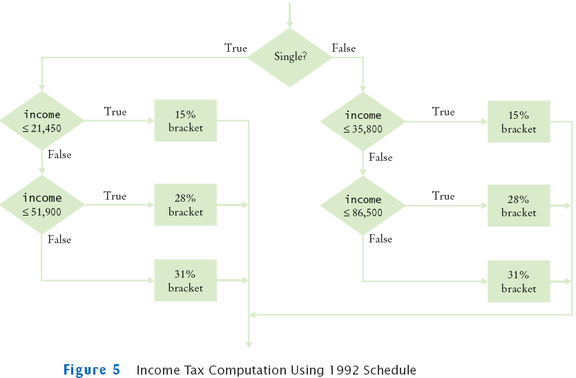

Nested Branches
- Compute taxes due, given filing status and income figure: (1)
branch on the filing status, (2) for each filing status, branch on
income level
- The two-level decision process is reflected in two levels of if
statements
- We say that the income test is nested inside the test for
filing status
